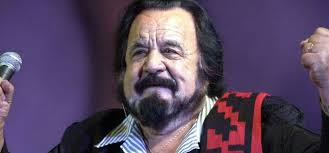
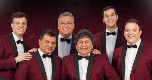
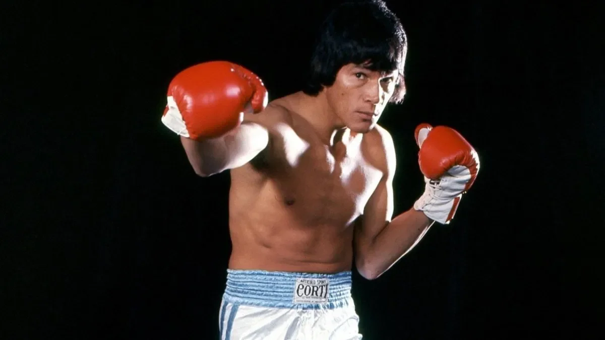
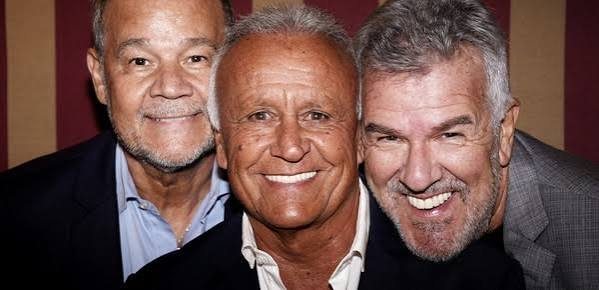

Figuras destacadas
Personalidades santafesinas que han trascendido fronteras y dejaron una huella en la historia, la cultura y el desarrollo de nuestra region, proyectando el nombre de Santa Fe al mundo.

Horacio Guaraní
Cantautor argentino nacido en 1925, reconocido como uno de los grandes referentes del folklore nacional. Sus canciones exaltan la identidad popular y la lucha social, convirtiéndolo en voz del pueblo. Con una extensa trayectoria, dejó un legado artístico que trascendió fronteras y generaciones.

Cacho Deicas
Cantante santafesino nacido en 1952, figura central de la cumbia argentina. Voz líder de Los Palmeras desde 1978, con éxitos que trascendieron fronteras. Ícono popular y cultural, reconocido por su estilo único y carisma escénico.

Carlos Monzón
Boxeador santafesino nacido en 1942, considerado uno de los más grandes campeones de peso mediano en la historia del boxeo. Se consagró campeón mundial en 1970 y defendió su título en 14 ocasiones, manteniendo un récord legendario. Su figura trascendió el deporte, convirtiéndose en símbolo de la fuerza y la pasión argentina.

Midachi
Grupo humorístico argentino nacido en Santa Fe en los años 80. Integrado por Miguel del Sel, Dady Brieva y el Chino Volpato, se destacó por sus espectáculos de humor, música y parodias que llenaron teatros en todo el país. Con su estilo popular y descontracturado, marcaron una época en la comedia argentina y siguen siendo referentes del humor santafesino.
Marcos Mundstock
Humorista, locutor y actor santafesino. Figura central de Les Luthiers, aportó su voz grave y guiones ingeniosos que definieron el estilo del grupo. Su legado artístico trascendió fronteras, convirtiéndose en símbolo del humor inteligente argentino.